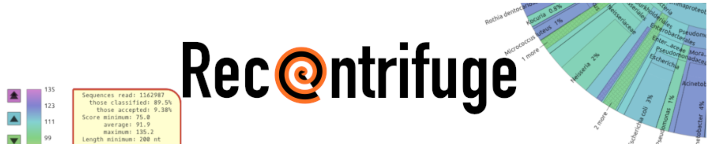

Taxonomic ID
Contents
Taxonomic ID#
We intended to sequence an E. coli strain provided to us. This turned into 2 strains each with a unique morphology on plates. But how do we know that this is E. coli at all? Hadn’t we better check?
Conducting a taxonomic analysis of our sequence data is good standard practice in all areas of genomics. This is not just because we may have got a mis-identified sample, it also checks for contamination. This could be contamination by other bacteria but it also checks that our sequence reads aren’t human, from lab contamination when preparing the DNA.
1.1 Kraken2 kmer analysis#
Kraken2 is software for rapid taxonomic analysis of DNA sequence data.
Wood DE, Lu J, Langmead B. Improved metagenomic analysis with Kraken 2. Genome Biol. 2019;20: 257. doi:10.1186/s13059-019-1891-0
Kraken2 will require access to:
a database of bacterial genomes
a taxonomy
your sequence reads
We provide a database of bacterial genomes data/bact_db
The taxonomy is a way to work out what species are represented by the database sequences matching your genome sequence reads. This taxonomy is within the bact_db database.
The sequence reads you are interested in are the *.fastq.gz files that have made it through QC. Unfortunately this is a big data set of about 4GB. For these reasons we are going to use a subset of 2000 sequences from the data with the fairly reasonable assumption that will be a representative sample of the whole. The sequence file to match against the database of genomes is called ONT/strainb/btest2k.fastq.gz
1.2 Running a Kraken2 analysis#
In typical unix style the command to match sequence data against the database is:
kraken2 --db DATABASENAME SEQFILENAME --gzip-compressed --output OUTFILENAME --report REPORTNAME
You will need to provide the name of the directory containng the database and taxonomy instead of
DATABASENAME, make sure you have the correct path to this, you can check using your command line skills.We have provided a 2000 sequence fastq file (ie
SEQFILENAME) inONT/strainb/filename.fastq.gz.The flag
--gzip-compressedtells Kraken2 that the input file has been compressed.The flag
--reportdetermines where the human readable report is written, please giove this a.txtextensionThe
--outputis a tab separated data file with information on each read. Please give this a.krkextensionPlease check for tyops
Once you have constucted your Kraken2 analysis command, try it and see in the cell below
A very good simple file to explore is /kraken/REPORTNAME.txt, have a look at this now.
The columns are
line number
percentage of reads
total reads
reads assigned to that taxonomic level
letter representing taxonomic level (eg G = genus)
taxonomic ID number
taxonomic name
1.3 Displaying the results#

We are going to display the results graphically using the Recentrifuge software. This produces interactive concentric pie charts to represent the quantity and hierarchical taxonomic classification of reads.
If you wish to see the sort of interactive diagrams produced by Recentrifuge here is an example report.
Martí JM. Recentrifuge: Robust comparative analysis and contamination removal for metagenomics. PLoS Comput Biol. 2019;15: e1006967. doi:10.1371/journal.pcbi.1006967
The Recentrifuge command is simple
rcf -k OUTFILENAME.krk
but unfortunately big data is very big and the taxonomic database for this analysis is much too large for the server we are operating on. We have carried out this analysis for you and the html file can be found in ONT/strainb/recentrifuge/strainbkraken.krk.rcf.html
This is just an html file that will open in a web browser. Explore this file. Ask specific questions. Discuss amongst yourselves and check with one of us
You should now have evidence for the taxonomic ID of all your sequence reads and be able to describe the likely source of our DNA to species, and describe the level of contamination in our DNA sequence, including human contamination.
Are you going to use a static version of this figure in your manuscript? What do you want it to show? Have you got the settings right, and exported a copy?
Write a paragraph describing this and pass to other students for feedback. Re-write your paragrpah and get feedback from a demonstrator
Questions#
What percentage of reads are ‘unknown’ (kraken report file) and what does this mean?
what percentage of reads are E. coli?
What percentage of reads are other bacteria (not E. coli) and what are the possible explanations for this?
Discuss these questions among yourselves, and make notes in your lab books.
CHECK WITH US BEFORE PROGRESSING